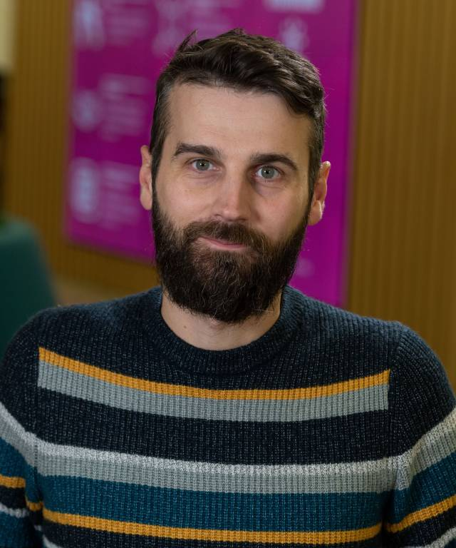
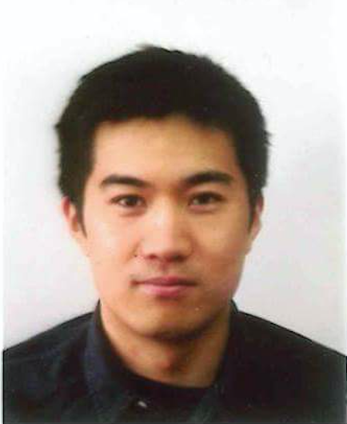
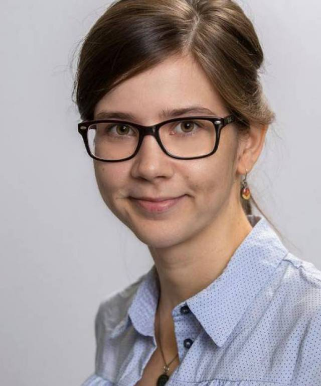
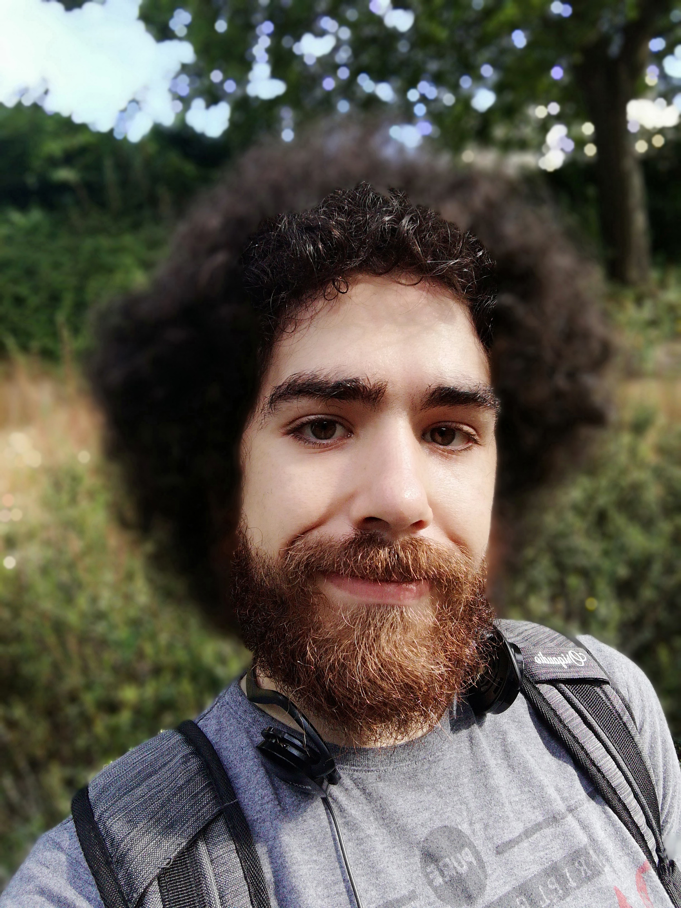

Elena is currently an AI Research Scientist (NLP) at J.P.Morgan. She was previously a Postdoctoral Researcher at the Queen Mary University of London and the Alan Turing Institute working on Tackling Misinformation using Natural Language Processing. She also previously worked on the PANACEA project funded by UKRI, which focused on COVID-19 - related misinformation. She has completed a PhD at the Computer Science department of the University of Warwick supervised by Prof. Maria Liakata and Prof. Rob Procter. Her background is in Applied Mathematics (BSc, MSc, Lobachevsky State University of Nizhny Novgorod) and Complexity Science (MSc, University of Warwick, Chalmers University).
Former PhD Student & Chief Technology Officer at Filament AI
James is the CTO and co-founder at Filament AI, a consultancy firm specialising in Machine Learning and Natural Language Processing which he co-founded after leaving his Solution Architect post at IBM Watson in 2016. He is a former PhD student of Prof. Liakata with whom he now co-supervises a Knowledge Transfer Partnership between The Turing Institute, Warwick University and Filament AI. His research interests lie in text mining and knowledge extraction tasks such as question answering, coreference resolution and text classification. His PhD research focused on large scale analysis of news articles and scientific papers in order to understand how coverage of scientific works by mainstream news outlets affects public perception of the impact generated by scientific work. James also maintains SAPIENTA, a machine learning pipeline originally developed by Prof. Liakata which provides discourse annotation for scientific papers, highlighting core scientific concepts (e.g. Hypothesis, Methodology, Conclusion) that different sentences play in scientific papers.
Senior Research Data Scientist at The Alan Turing Institute

Federico is a Senior Research Data Scientist at The Alan Turing Institute, working as part of the Research Engineering Group. Prior to joining the Institute, he completed a PhD in History of Technology and Digital Humanities at the University of Bologna focused on the use of web archives in historical research and has been a post-doc in Computational Social Science at the Data and Web Science Group of the University of Mannheim. He also spent time as a visiting researcher at the Foundation Bruno Kessler and the University of New Hampshire, working on Natural Language Processing and Information Retrieval.
Former PhD Student & Post-doctoral Research Fellow at Massachusetts General Hospital

Bo Wang, PhD, is a postdoctoral research fellow, working with Dr. Jordan Smoller at the Center for Precision Psychiatry, Massachusetts General Hospital. He received his PhD in natural language processing from University of Warwick, supervised by Prof. Maria Liakata and Prof. Rob Procter, on the topic of social media opinion extraction, classification and summarization. This was followed by postdoctoral training in the Department of Psychiatry at the University of Oxford and the Alan Turing Institute. He is interested in learning patient representation and modelling patient health trajectory from multi-modal data including clinical notes from EHRs. His current research focuses on risk prediction modelling in psychiatry and information extraction from clinical notes.
Former PhD Student & Applied Scientist at Amazon

Nicole received her PhD from the Department of Computer Science at the University of Warwick, with a special interest in Natural Language Processing (NLP), under the supervision of Professor Maria Liakata. Nicole's research focused on deep learning models for natural language understanding problems, such as semantic similarity, paraphrase detection and question answering. During her PhD, she identified common dataset biases, developed more robust evaluation metrics and designed novel deep learning models. Prior to undertaking her PhD, Nicole studied Computational Linguistics and Chinese language in Germany, China and Taiwan.
Former Research Associate & Applied Machine Learning Scientist at Filament AI

Matt is an industrial researcher working with Filament AI, with an MSc in Speech and Language Processing from the University of Edinburgh. His past research focuses have included synthetic data generation, AI explainability, question answering, and story analysis. He primarily works with HuggingFace, PyTorch, and spaCy.